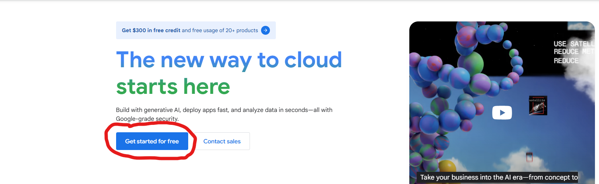
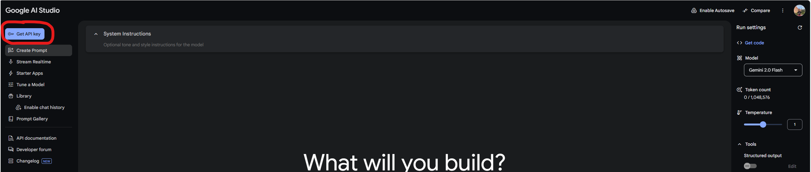
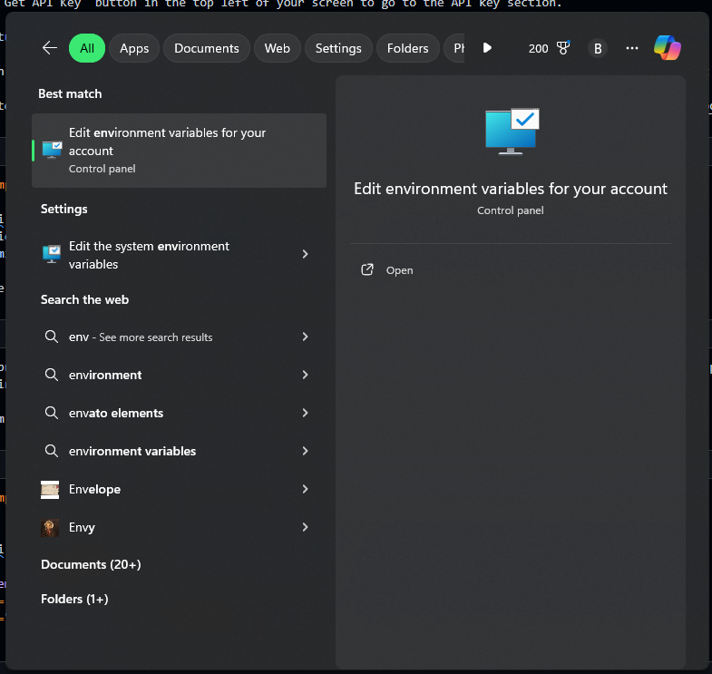
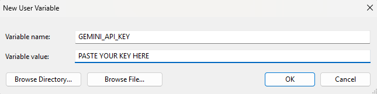

from google import genai
client = genai.Client(api_key="YOUR_API_KEY")
response = client.models.generate_content(
model="gemini-2.0-flash", contents="Explain how AI works"
)
print(response.text)If you pay any attention to tech news, you have likely heard quite a bit over the last year about Large Language Models (LLMs). LLMs are simply artificial intelligence models that are trained on large sets of human generated text (hence, the large language part of the name), can understand human input, and generate response content based on the human input.
While some models like Chat-GPT require purchasing an API key to interact with model in a local environment, the Google Gemini model is free to interact with via API by simply requesting one through Google’s AI Studio.
Getting Started
The first thing you’ll need to do in order to work with Google Gemini via their API is set up a Google Cloud Environment. Simply click on “Get started for free” and follow the instructions to set up your account.

From there you will be taken to a project dashboard. You shouldn’t have to do anything from there - we just need a project available for our next step, which is generating an API key. Go to the Google AI Studio to do this. You can interact with Gemini from here, but that doesn’t really fit our goal of trying to do things locally.
Click on the “Get API Key” button in the top left of your screen to go to the API key section.

Once you reach that page, click the “Create API Key button in the middle of the page, find your project, and select it. That will create a pop up with a string of random characters. Congratulations, you’ve created your API key!
How you wish to use the API key is a matter of personal preference. The documentation for Google AI shows them just using the key directly in their script like so:
I personally prefer to place my API keys in my environment variables so that I can work with them across different projects. This next bit is specific to Windows users. Mac users can check out this tutorial to set their own environment variables.
In your system search box, search for environment variables.

When you click on that, a dialog box will appear with options for user variables and system variables. These are just key/value pairs that your computer keeps on hand so you can call them from wherever you are working. You’ll want to click on the “New…” button under the user variables section. Another dialog box will appear for you to set the key and value for your variable. Choose a name that you will remember, and paste that key from Google into “Variable value:” text box. Click “OK” and you have now set up your API key as a user variable!

You are now ready to start coding and interacting with Google Gemini through their API!
Working with Gemini From a Python Environment
Setting up the API key is really the most difficult part of trying to work with the Gemini API. And, as we’ve just seen, even that isn’t too difficult!
The first thing we’ll need to do to set up our environment to work with the Gemini API is make sure that we have the correct packages installed. We should just need one. Run the following command from your command prompt to install the google-genai package.
pip install -q -U google-genaiNow you can start coding! I set up my loop to talk to Gemini like this:
from google import genai
import os
# Replace "GEMINI_API_KEY" with the name you gave your API key
# in your user variables
client = genai.Client(api_key=os.environ["GEMINI_API_KEY"])
# Define function to talk to Gemini
def talk_to_gemini(prompt):
""""
Args:
prompt(str): The prompt to send to the model
Returns:
response(str): The response from the model
"""
response = client.models.generate_content(
model="gemini-2.0-flash", contents=prompt,
)
return response
while True:
user_input = input("You: ")
if user_input.lower() == "exit":
print("Goodbye!")
break
else:
print("You: " + user_input)
response = talk_to_gemini(user_input)
print("Gemini: " + response.text)Let me explain what this is doing.
I set up my API client object with the key/value pair that I set up in my user variables. I use “GEMINI_API_KEY” as the key for my API key value. Replace that with whatever you set for the name of your API key in your user variables. That client object is how Google knows that you are a valid person who is able to interact with their API.
I then define a function that takes a prompt as an argument and returns the response from Gemini.
Then I create a loop in which I ask for user input, call the function, and print the response from Gemini. I prefer to use a loop because, when interacting with a chatbot like Gemini, it doesn’t do me a ton of good to send one message and be done. I generally want to send multiple messages and have a conversation with the chatbot. I include a sentinel value “exit” so that when the user enters that word, the loop will exit and end the conversation.
Conclusion
You have now set up a process to interact with the Google Gemini AI through their API! You can chat with it as you would with any other chatbot. Ask it questions, give it prompts, or enter into a debate!
The process is really quite simple, as demonstrated here. Enjoy your new tool and utilize the power that comes from Large Language Models.